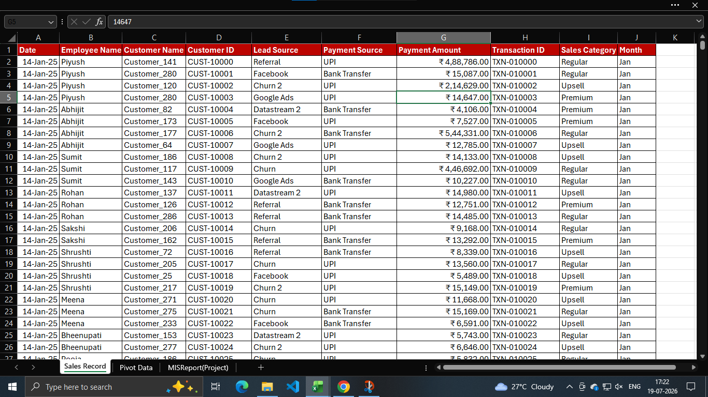
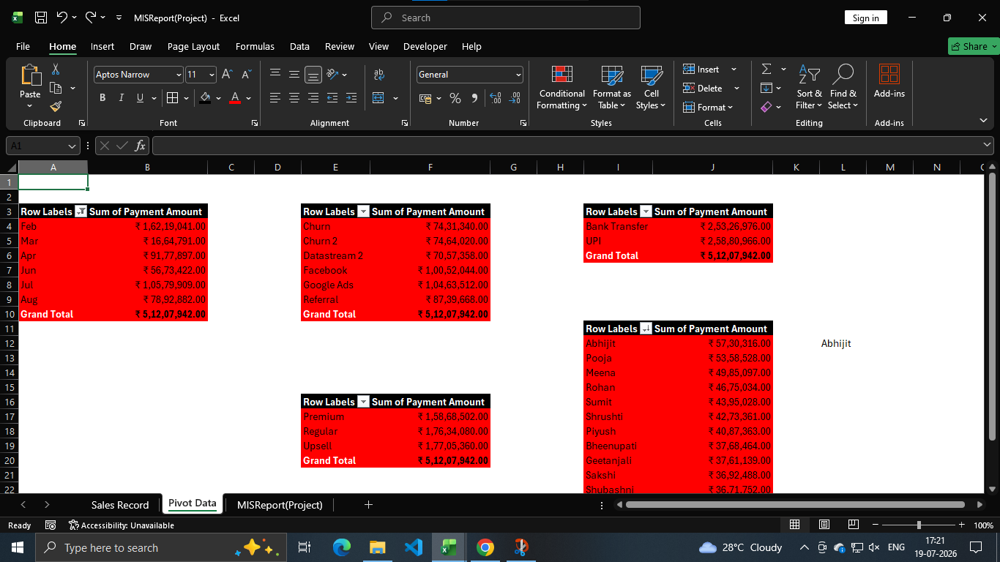

Dashboard Gallery
Excel dashboards
built to tell the story.
These visuals reflect my approach to reporting: clear structure, business-focused metrics, and dashboards that help teams act faster with confidence.
What this shows
Business-ready reporting
I focus on turning raw numbers into dashboards that are easy to read, useful for decision-making, and strong enough for both team updates and leadership review.
- Executive-friendly summaries
- Clear KPI tracking and trend visibility
- Practical MIS-style reporting views
Interview-ready summary
Data + business thinking
I combine Excel, reporting logic, dashboard design, and a business mindset to create outputs that are both visual and actionable.
Excel
Pivot Tables
MIS
Dashboard Design
Featured Work
Dashboard snapshots
